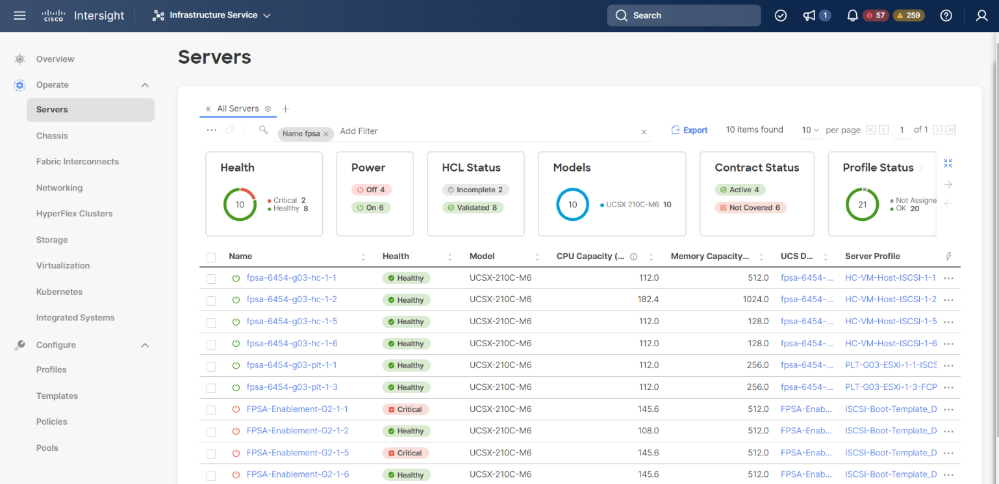

FlexPod 정의
FlexPod 정의
솔루션 구성 요소
 변경 제안
변경 제안
FlexPod
FlexPod는 가상화된 솔루션과 가상화되지 않은 솔루션 모두를 위한 통합된 기반을 형성하는 정의된 하드웨어 및 소프트웨어 세트입니다. FlexPod에는 NetApp ONTAP 스토리지, Cisco Nexus 네트워킹, Cisco MDS 스토리지 네트워킹 및 Cisco UCS(Unified Computing System)가 포함되어 있습니다.
의료 조직에서는 디지털 혁신을 촉진하고 환자 경험 및 결과를 개선할 수 있는 솔루션을 찾고 있습니다. FlexPod를 사용하면 안전하고 확장 가능한 플랫폼을 통해 효율성을 높이고, 직원들이 정보에 근거하여 보다 신속하게 결정을 내릴 수 있도록 함으로써 환자를 보다 효과적으로 간호할 수 있습니다.
FlexPod는 다음과 같은 이점을 제공하므로 의료 워크로드 요구사항에 이상적인 플랫폼입니다.
-
작업 최적화를 통해 통찰력을 높이고 환자 결과를 개선할 수 있습니다.
-
확장 가능하고 안정적인 인프라로 이미징 애플리케이션 간소화
-
EHR과 같은 의료 관련 앱을 위한 검증된 접근 방식으로 빠르고 효율적으로 배포
EHR
EHR(Electronic Health Records)은 중간 규모 및 대규모 의료 그룹, 병원 및 통합 의료 조직을 위한 소프트웨어를 만듭니다. 또한 커뮤니티 병원, 학술 시설, 아동 기관, 안전망 제공자 및 다중 병원 시스템도 고객이 포함됩니다. EHR 통합 소프트웨어는 임상, 액세스 및 수익 기능을 확장하여 집으로 확장합니다.
의료 기관 조직은 업계 최고의 EHR에 투자함으로써 얻을 수 있는 이익을 극대화해야 한다는 압박을 받고 있습니다. 고객은 EHR 솔루션 및 미션 크리티컬 애플리케이션을 위한 데이터 센터를 설계할 때 데이터 센터 아키텍처에서 다음 목표를 식별하는 경우가 많습니다.
-
EHR 애플리케이션의 고가용성
-
고성능
-
데이터 센터에 EHR을 손쉽게 구현할 수 있습니다
-
새로운 EHR 릴리즈 또는 애플리케이션을 사용하여 성장을 실현할 수 있는 민첩성과 확장성
-
비용 효율성
-
관리 용이성, 안정성 및 지원 용이성
-
강력한 데이터 보호, 백업, 복구 및 비즈니스 연속성
FlexPod는 EHR의 검증을 받았으며 인텔 제온 프로세서, RHEL(Red Hat Enterprise Linux) 및 VMware ESXi를 통한 가상화를 지원하는 Cisco UCS를 포함하는 플랫폼을 지원합니다. 이 플랫폼은 ONTAP을 실행하는 EHR의 NetApp 스토리지에 대한 높은 편안함 수준과 결합되어 고객은 FlexPod를 통해 완벽하게 관리되는 프라이빗 클라우드에서 의료 애플리케이션을 실행할 수 있으며, 이 경우 퍼블릭 클라우드 공급자와 연결될 수 있습니다.
NetApp BlueXP
BlueXP(이전의 NetApp Cloud Manager)는 IT 전문가 및 클라우드 설계자가 NetApp 클라우드 솔루션을 사용하여 하이브리드 멀티 클라우드 인프라를 중앙에서 관리할 수 있도록 지원하는 엔터프라이즈급 SaaS 기반 관리 플랫폼입니다. 이 솔루션은 사내 및 클라우드 스토리지를 중앙 집중식으로 확인 및 관리할 수 있는 시스템을 제공하여 하이브리드, 다중 클라우드 공급자 및 계정을 지원합니다. 자세한 내용은 을 참조하십시오 "BlueXP".
커넥터
Connector 인스턴스를 사용하면 BlueXP에서 퍼블릭 클라우드 환경 내의 리소스와 프로세스를 관리할 수 있습니다. 커넥터는 BlueXP에서 제공하는 많은 기능에 필요하며 클라우드 또는 사내 네트워크에 배치할 수 있습니다.
커넥터는 다음 위치에서 지원됩니다.
-
Amazon Web Services에서 직접 지원합니다
-
Microsoft Azure를 참조하십시오
-
Google 클라우드
-
온프레미스
Connector에 대한 자세한 내용은 를 참조하십시오 "커넥터 페이지".
NetApp Cloud Volumes ONTAP를 참조하십시오
NetApp Cloud Volumes ONTAP는 클라우드에서 ONTAP 데이터 관리 소프트웨어를 실행하여 파일 및 블록 워크로드에 대한 고급 데이터 관리 기능을 제공하는 소프트웨어 정의 스토리지 오퍼링입니다. Cloud Volumes ONTAP을 사용하면 클라우드 스토리지 비용을 최적화하고 애플리케이션 성능을 높이는 동시에 데이터 보호, 보안 및 규정 준수를 향상할 수 있습니다.
주요 이점은 다음과 같습니다.
-
* 스토리지 효율성 * 내장 데이터 중복제거, 데이터 압축, 씬 프로비저닝, 즉각적인 클로닝을 활용하여 스토리지 비용을 최소화합니다.
-
* 고가용성. * 클라우드 환경에서 장애가 발생할 경우 엔터프라이즈급 안정성과 지속적인 운영을 제공합니다.
-
* 데이터 보호. * Cloud Volumes ONTAP은 업계 최고의 NetApp 복제 기술인 SnapMirror를 사용하여 사내 데이터를 클라우드로 복제하므로 여러 사용 사례에서 2차 복사본을 쉽게 사용할 수 있습니다. Cloud Volumes ONTAP는 또한 클라우드 백업과 통합되어 클라우드 데이터를 보호하고 장기적으로 아카이빙하기 위한 백업 및 복원 기능을 제공합니다.
-
* 데이터 계층화. * 애플리케이션을 오프라인으로 전환하지 않고도 필요에 따라 고성능 및 저성능 스토리지 풀을 전환할 수 있습니다.
-
* 애플리케이션 정합성: * NetApp SnapCenter 기술을 사용하여 NetApp Snapshot 복사본의 일관성을 제공합니다.
-
* 데이터 보안. * Cloud Volumes ONTAP는 데이터 암호화를 지원하고 바이러스 및 랜섬웨어에 대한 보호를 제공합니다.
-
* 개인 정보 보호 규정 준수 제어. * Cloud Data Sense와 통합하여 데이터 컨텍스트를 이해하고 중요한 데이터를 식별할 수 있습니다.
자세한 내용은 을 참조하십시오 "Cloud Volumes ONTAP".
NetApp Active IQ Unified Manager를 참조하십시오
NetApp Active IQ Unified Manager를 사용하면 커뮤니티 지혜 및 AI 분석을 제공하는, 새롭게 재설계된 직관적인 단일 인터페이스를 통해 ONTAP 스토리지 클러스터를 모니터링할 수 있습니다. 이 솔루션은 스토리지 환경 및 스토리지 환경에서 실행되는 가상 시스템에 대한 포괄적인 운영, 성능 및 사전 통찰력을 제공합니다. 스토리지 인프라에서 문제가 발생하면 Unified Manager에서 문제의 세부 정보를 알려 근본 원인을 파악할 수 있습니다. 가상 머신 대시보드에서는 VM의 성능 통계를 볼 수 있으므로 vSphere 호스트에서 네트워크를 거쳐 마지막으로 스토리지까지 전체 입출력 경로를 조사할 수 있습니다.
일부 이벤트는 문제를 해결하기 위해 취할 수 있는 개선 조치도 제공합니다. 이벤트가 발생할 때 e-메일 및 SNMP 트랩을 통해 알림을 받도록 이벤트에 대한 사용자 지정 알림을 구성할 수 있습니다. Active IQ Unified Manager를 사용하면 용량 및 사용 추세를 예측하여 사용자의 스토리지 요구 사항을 계획할 수 있으므로 문제 발생 전에 조치를 취할 수 있고 장기적인 문제를 야기할 수 있는 사후 대처 방식의 단기 결정을 방지할 수 있습니다.
자세한 내용은 을 참조하십시오 "Active IQ Unified Manager".
Cisco Intersight를 참조하십시오
Cisco Intersight는 기존 및 클라우드 네이티브 애플리케이션과 인프라에 대한 지능형 자동화, 관찰 가능성 및 최적화를 제공하는 SaaS 플랫폼입니다. 이 플랫폼은 IT 팀의 변화를 주도하는 데 도움이 되며 하이브리드 클라우드용으로 설계된 운영 모델을 제공합니다. Cisco Intersight는 다음과 같은 이점을 제공합니다.
-
신속한 제공.* Intersight는 민첩한 기반 소프트웨어 개발 모델로 인해 자주 업데이트되고 지속적인 혁신을 통해 클라우드 또는 고객의 데이터 센터에서 서비스로 제공됩니다. 따라서 고객은 중요한 비즈니스 요구를 지원하는 데 집중할 수 있습니다.
-
* 운영 간소화. * Intersight는 공통 인벤토리, 인증 및 API가 포함된 안전한 단일 툴을 사용하여 운영을 간소화함으로써 전체 스택 및 모든 위치에서 작업을 수행할 수 있으므로 팀 간의 사일로를 제거할 수 있습니다. 이를 통해 온프레미스 물리적 서버와 하이퍼바이저를 VM, K8s, 서버리스, 자동화 등으로 관리할 수 있습니다. 사내 및 퍼블릭 클라우드 모두에서 최적화 및 비용 제어
-
지속적인 최적화. Cisco Intersight가 제공하는 인텔리전스를 사용하여 Cisco TAC뿐만 아니라 모든 계층에서 환경을 지속적으로 최적화할 수 있습니다. 이 인텔리전스는 권장 및 자동화 작업으로 변환되므로 워크로드 이동, 물리적 서버 상태 모니터링, 함께 작동하는 퍼블릭 클라우드의 비용 절감 권장 사항에 이르기까지 모든 변화에 실시간으로 대응할 수 있습니다.
Cisco Intersight를 사용하면 UCSM 관리 모드(UMM)와 Intersight 관리 모드(IMM)의 두 가지 관리 작업 모드를 사용할 수 있습니다. 패브릭 상호 연결의 초기 설정 중에 패브릭 연결 Cisco UCS 시스템에 대한 네이티브 UCSM 관리 모드(UMM) 또는 Intersight 관리 모드(IMM)를 선택할 수 있습니다. 이 솔루션에서는 네이티브 IMM이 사용됩니다. 다음 그림에서는 Cisco Intersight 대시보드를 보여 줍니다.

VMware vSphere 7.0
VMware vSphere는 CPU, 스토리지 및 네트워킹을 비롯한 대규모 인프라스트럭처 모음을 원활하고 다재다능하며 동적인 운영 환경으로 포괄적으로 관리할 수 있는 가상화 플랫폼입니다. 개별 시스템을 관리하는 기존 운영 체제와 달리 VMware vSphere는 전체 데이터 센터의 인프라를 통합하여 필요한 애플리케이션에 빠르고 동적으로 할당할 수 있는 리소스를 갖춘 강력한 단일 리소스를 생성합니다.
VMware vSphere 및 해당 구성 요소에 대한 자세한 내용은 를 참조하십시오 "VMware vSphere를 참조하십시오".
VMware vCenter Server를 참조하십시오
VMware vCenter Server는 단일 콘솔에서 모든 호스트와 VM을 통합 관리하고 클러스터, 호스트 및 VM의 성능 모니터링을 통합합니다. VMware vCenter Server를 통해 관리자는 컴퓨팅 클러스터, 호스트, VM, 스토리지, 게스트 OS, 가상 인프라스트럭처의 기타 주요 구성 요소 VMware vCenter는 VMware vSphere 환경에서 사용할 수 있는 다양한 기능을 관리합니다.
자세한 내용은 을 참조하십시오 "VMware vCenter를 참조하십시오".
하드웨어 및 소프트웨어 개정
이 하이브리드 클라우드 솔루션은 에 정의된 대로 지원되는 소프트웨어, 펌웨어 및 하드웨어 버전을 실행하는 FlexPod 환경으로 확장할 수 있습니다 "NetApp 상호 운용성 매트릭스 툴", "UCS 하드웨어 및 소프트웨어 호환성", 및 "VMware 호환성 가이드 를 참조하십시오".
다음 표에는 사내 FlexPod 하드웨어 및 소프트웨어 개정 버전이 나와 있습니다.
| 구성 요소 | 제품 | 버전 |
|---|---|---|
컴퓨팅 |
Cisco UCS X210c M6 |
5.0(1b) |
Cisco UCS Fabric 인터커넥트 6454 |
4.2(2a) |
|
네트워크 |
Cisco Nexus 9336C-FX2 NX-OS |
9.3(9) |
스토리지 |
NetApp AFF A400 |
ONTAP 9.11.1P2 |
VMware vSphere용 NetApp ONTAP 툴 |
9.11 |
|
VMware VAAI용 NetApp NFS 플러그인 |
2.0 |
|
NetApp Active IQ Unified Manager를 참조하십시오 |
9.11P1 |
|
소프트웨어 |
VMware vSphere를 참조하십시오 |
7.0(U3) |
VMware ESXi nenic 이더넷 드라이버 |
1.0.35.0 |
|
VMware vCenter 어플라이언스 |
7.0.3 |
|
Cisco Intersight Assist 가상 어플라이언스 |
1.0.9-342 |
다음 표는 NetApp BlueXP 및 Cloud Volumes ONTAP 버전을 보여줍니다.
| 공급업체 | 제품 | 버전 |
|---|---|---|
넷엡 |
BlueXP |
3.9.24 |
Cloud Volumes ONTAP |
ONTAP 9.11 |